Accepted to IROS 2026
AUG: Perception-Aware UAV Graph-Based Planning for GNSS-Denied Navigation in Feature-Sparse Environments
Long-range UAV planning that reasons about geometry, observability, and yaw together.
AUG plans around estimator health, not only collision avoidance. It incrementally builds a free-space topological graph, runs local MINCO optimization on a robocentric ROG-map, and adjusts yaw so LiDAR keeps observing structure-rich regions during GNSS-denied flight.
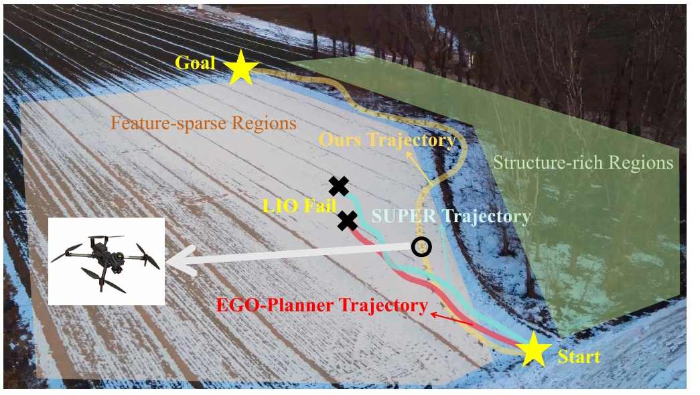
Abstract
When localization weakens, a path that is collision-free can still be mission-failure-prone.
Long-range UAV navigation in GNSS-denied, feature-sparse outdoor environments is difficult because LiDAR-inertial odometry can lose conditioning even when a valid geometric path exists. The problem is not only obstacle avoidance; it is keeping the estimator healthy enough to finish the mission.
AUG addresses this by coupling topology-aware global routing with estimator-aware local optimization. The planner incrementally constructs a free-space graph, performs local trajectory refinement on a robocentric map, and explicitly optimizes yaw to preserve informative sensor observations.
Contributions
Three pieces make the planner practical at long range.
Incremental topology graph
Builds a free-space graph online and prefers corridors that are both traversable and informative, rather than optimizing geometry alone.
Robocentric local planning
Uses a sliding ROG-map and MINCO optimization to keep memory bounded while still generating smooth, real-time trajectories.
Perception-constrained yaw
Scores yaw choices by the quality of visible structure so the LiDAR keeps useful features in view during flight.
Method
Global route, local trajectory, and heading are planned together.
AUG first expands a connectivity graph from local free-space bubbles and feature support. The global route then favors paths through structure-rich corridors, which reduces the chance of entering estimator-degrading regions.
The selected route feeds a local optimizer operating on a sliding robocentric map. In parallel, the yaw module searches for headings that maintain informative LiDAR geometry, making the flight stack behave as a single perception-aware system rather than disconnected modules.
Topology-guided routing
Extracts usable corridors from online observations and avoids weakly observed space when better alternatives exist.
ROG-map trajectory optimization
Optimizes smooth local motion with bounded memory, which is crucial for kilometer-scale missions.
Yaw search and refinement
Adjusts the viewing direction to preserve feature-rich LiDAR returns and suppress estimator drift.
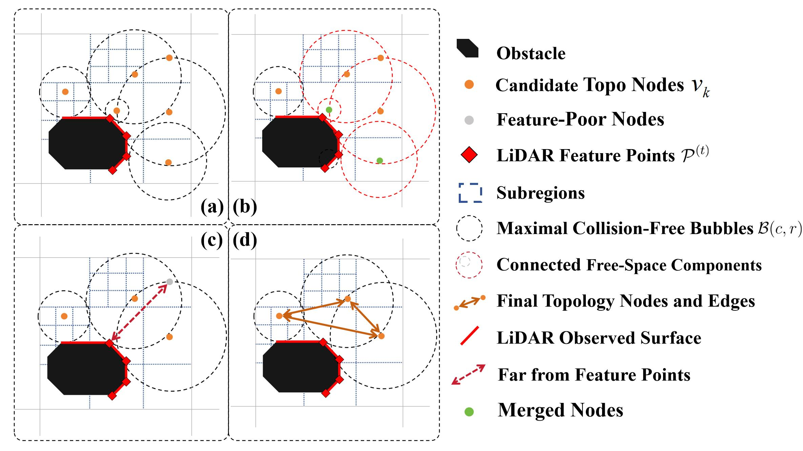
Results
Reliability improves without a large memory or runtime penalty.
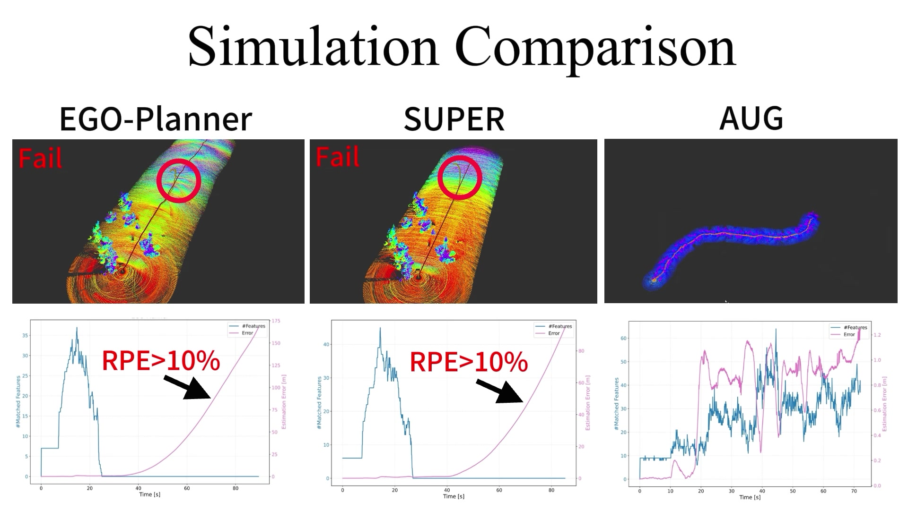
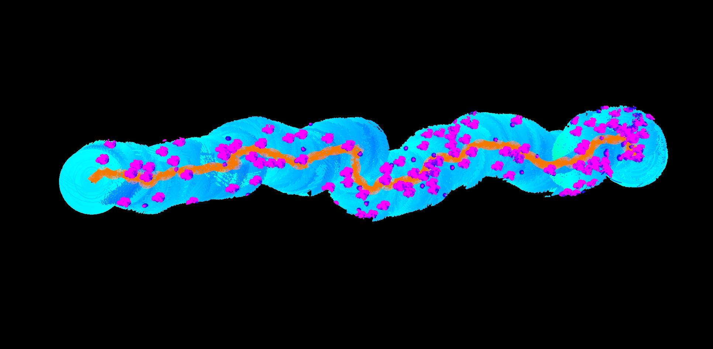
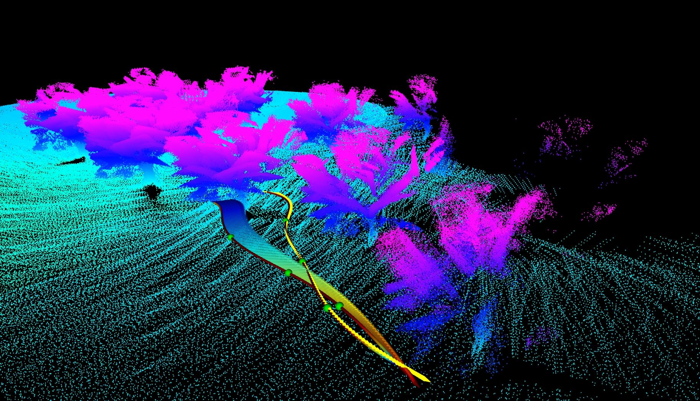
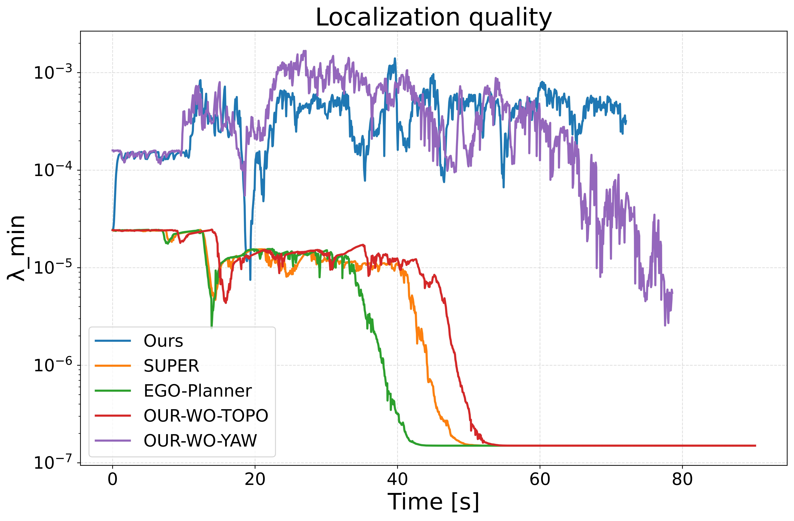
Simulation summary
| Scene | Success | ATE | RPE |
|---|---|---|---|
| Scene 1 | 100% | 2.38 m | 1.1% |
| Scene 2 | 100% | 3.68 m | 1.5% |
| Scene 3 | 100% | 3.13 m | 1.7% |
Experiments
Indoor validation and outdoor flights show the same pattern.
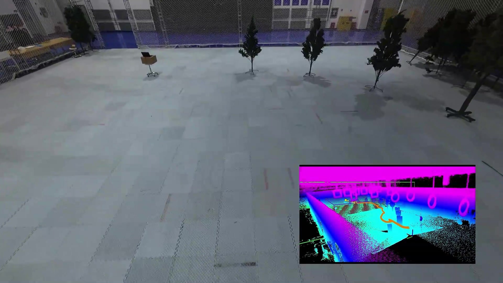
Indoor validation
Ten indoor flights of about 30 m confirm stable onboard execution against ground truth.
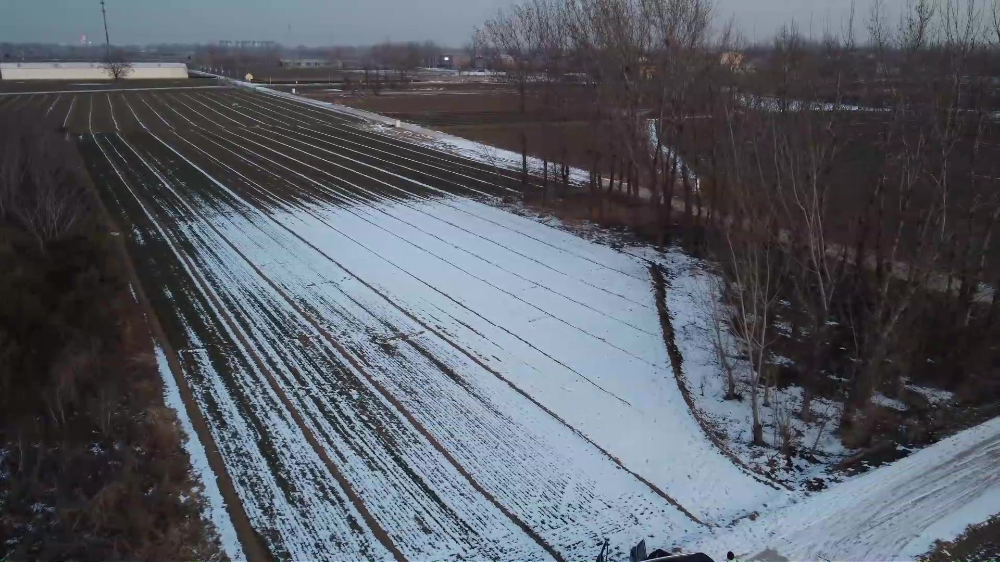
Outdoor field flight
Ten outdoor flights of about 200 m complete with a mean GNSS-referenced drift ratio of 2.24%.
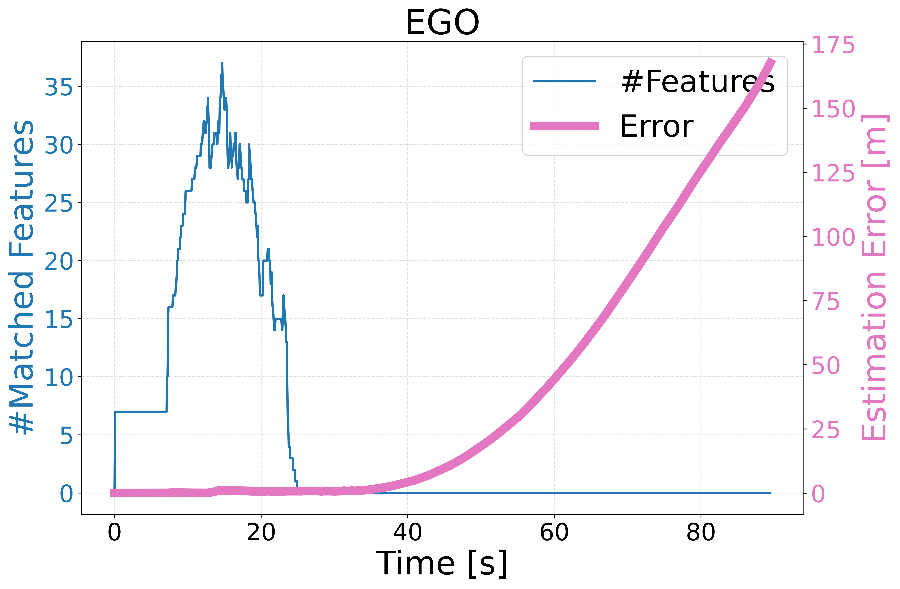
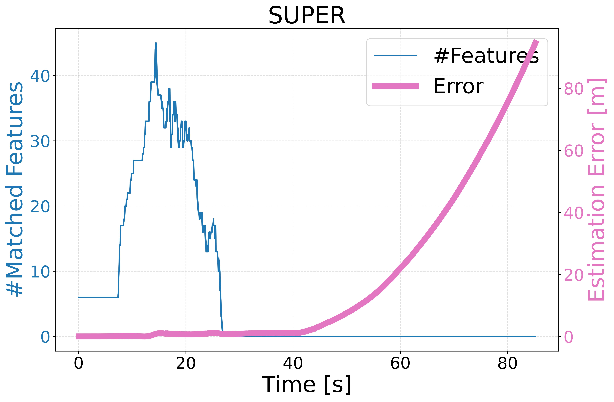
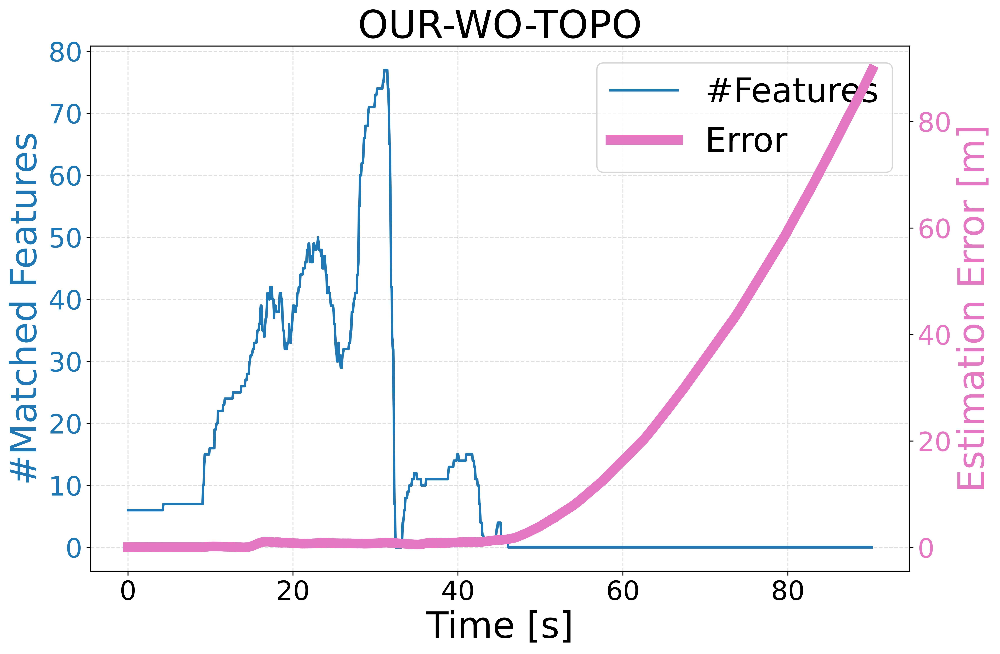
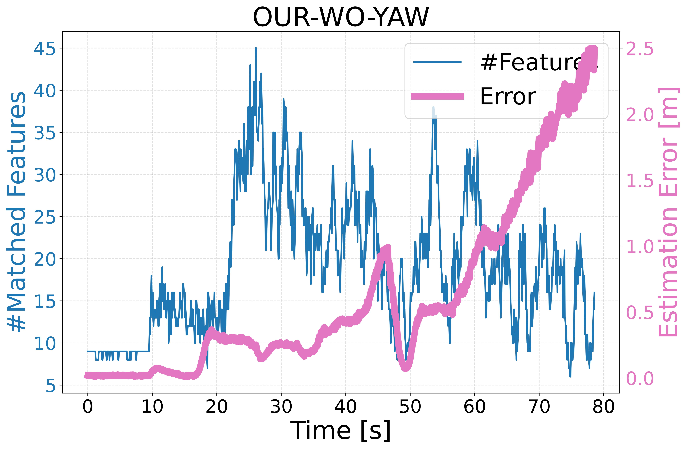
| Method | GNSS-referenced drift | Memory | Status |
|---|---|---|---|
| AUG | 2.24% | 0.92 GB | Success |
| SUPER | 10.13% | 0.61 GB | Failure |
| EGO-Planner | 16.80% | 2.46 GB | Failure |
Citation
Reference this work.
@inproceedings{feng2026aug,
title = {AUG: Perception-Aware UAV Graph-Based Planning for GNSS-Denied Navigation in Feature-Sparse Environments},
author = {Feng, Enguang and Yuan, Haohuan and Zhang, Hong and Xu, Hao and Dou, Yikun and Lin, Jiarong and Dong, Xiwang},
booktitle = {IEEE/RSJ International Conference on Intelligent Robots and Systems (IROS)},
year = {2026}
}